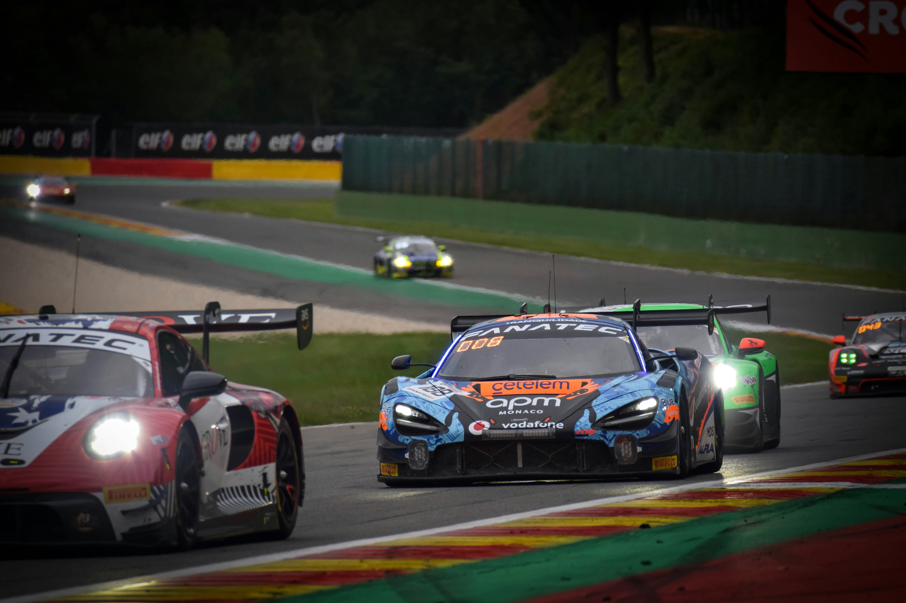
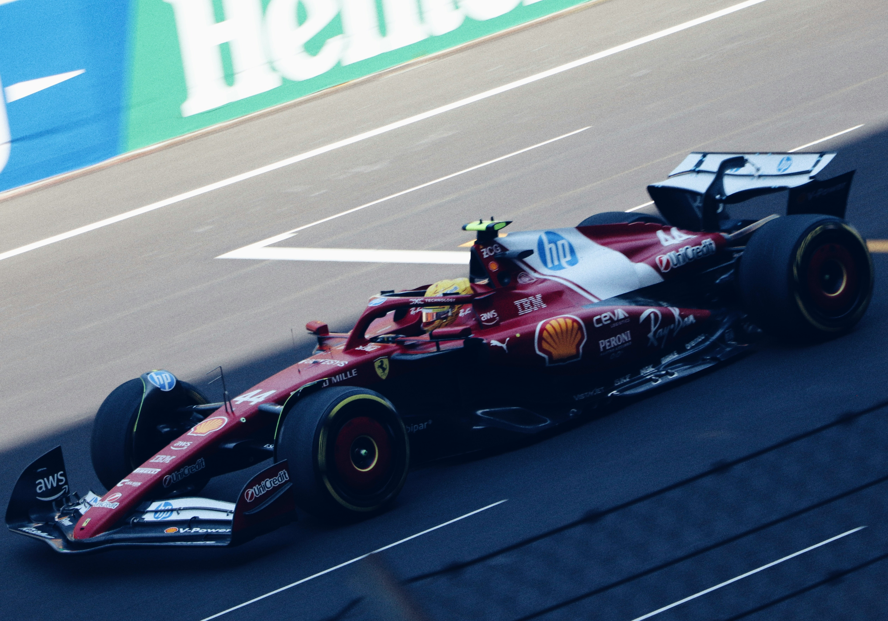

Досліджуйте далі
Інші чемпіонати

GT World Challenge
Найпрестижніша GT-серія світу. Заводські команди та приватні екіпажі змагаються на легендарних трасах на серійних суперкарах.
Перейти на сторінку →
Formula 1
Вершина автоспорту. Найшвидші боліди планети та найкращі пілоти світу борються за титул чемпіона світу.
Перейти на сторінку →
Formula E
Перегони майбутнього. Повністю електричні боліди змагаються на вулицях найбільших міст світу.
Перейти на сторінку →